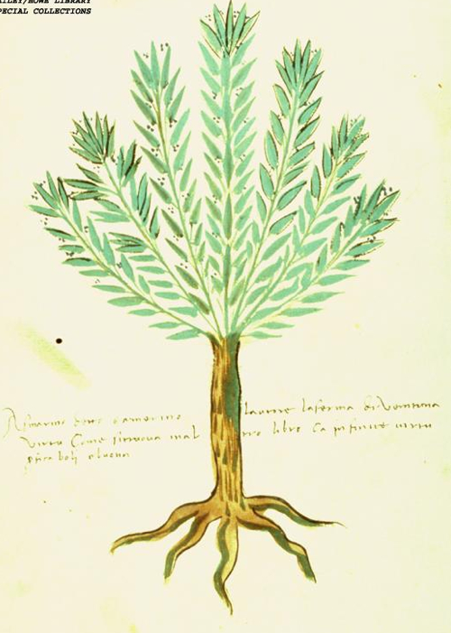

 <div style="text-align:left"><span style="font-size: medium;"><div style="text-align:center"><span style="font-size: x-large;">С днем рожденья  <span class="ljuser  i-ljuser  i-ljuser-type-P     " data-ljuser="lev_usyskin" lj:user="lev_usyskin"><a href="https://lev-usyskin.livejournal.com/profile/" target="_self" class="i-ljuser-profile"></a><a href="https://lev-usyskin.livejournal.com/" class="i-ljuser-username" target="_self"><b>lev_usyskin</b></a></span>!</span></div><br/><center><br/><a href="https://fotki.yandex.ru/next/users/galley42/album/57424/view/1039497?context=" target="_blank" target="_blank" rel="nofollow"></a><br/></center><br/><br/>Пусть неустанными остаются Ваши труды на ниве познания истины.<br/><br/>Разделяя мнение мудрого Д. Самойлова<br/><br/><p style="margin: 0cm 0cm 0pt 8cm;"><br/> <span style="font-size: medium;">И вправду, много ль мы постигли<br/>С тех пор, когда варился в тигле<br/>Волшебный корень колдуна? </span></p><br/><br/>все же продолжаю верить, что и сейчас жемчужина нового знания, добытая каждым из нас, возвышает всех. Успехов и удачи Вам, Лев Борисович!</span></div> 